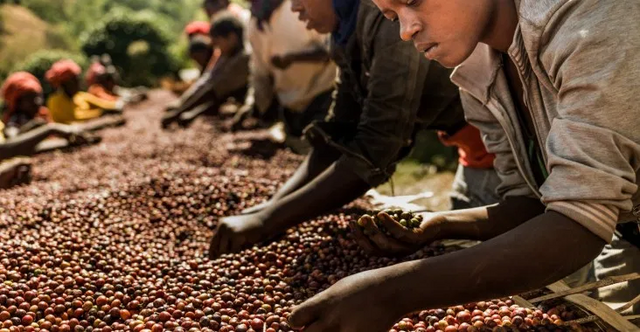
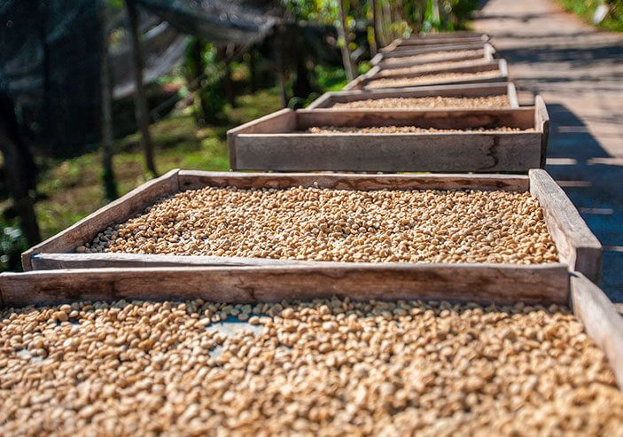

De donde viene el Cafe?
Se conoce como café a la semilla que se encuentra en el fruto de una cereza del cafeto y a la bebida que se obtiene de la misma al final del proceso agrícola e industrial. El cafeto, o Coffea, es un género de plantas clasificado dentro de la gran familia de las rubiáceas. Se trata de un arbusto nativo del África subtropical y del sur de Asia, que da un fruto denominado drupa, semejante a la cereza, cuyas semillas se emplean (molidas y tostadas) en la elaboración del café.
Su cultivo se da en las zonas tropicales del planeta; hay café sólo en la franja que rodea el mundo entre los dos trópicos. En Centroamérica, el norte de Sudamérica, el norte de África e Indonesia. Las dos especies más importantes de la planta se llaman arábica y robusta. Cada una tiene sus propias cualidades, y se cultivan en climas y altitudes distintas. La variedad arábica es la más utilizada en la elaboración de cafés de especialidad y gourmet.

Recoleccion
La flor del cafeto se convierte en un fruto maduro después de 32 semanas (8 meses) para el arábica, y entre 9 y 11 meses para el robusta. Esto da inicio a la cosecha o recolección. La recolección puede ser:
Manual: en este tipo de cosecha se seleccionan los mejores frutos, ya que se recolectan sólo los maduros, uno por uno. Es un tipo de cosecha más costosa, que se aplica sólo para los cafés de mejor calidad.
Mecanica: se cosechan grandes superficies al mismo tiempo gracias al uso de cosechadoras y tractores que van recibiendo las drupas cosechadas. Es rápido, poco laborioso, tiene bajos costos laborales y es menos preciso en cuanto a la calidad recolectada.
Stripping: es un método manual, pero en vez de cosechar el fruto uno por uno, los cosechadores sacan al mismo tiempo todos los que están en la rama y los dejan caer en una lona dispuesta debajo del cafeto. Si bien es manual, es más rápido y menos costoso, aunque ofrece una cosecha despareja.
Beneficio
El beneficio comprende todos los procesos necesarios para convertir un fruto de café en un grano de pergamino seco, capaz de almacenarse y listo para la trilla. Existen varios procesos de beneficio posibles. Los dos más usados son el natural y el lavado
Lavado o humedo: el objetivo del beneficio por vía húmeda es deshacerse de la pulpa del fruto para poder secar más fácilmente el café pergamino y después poder almacenarlo bajo condiciones que aseguren una buena conservación. Se separan para limpiar en agua (las defectuosas o verdes flotan y las rojas maduras quedan en el fondo debido a su densidad), se realiza el despulpado, luego se deja fermentar en agua (entre 4 y 24 hs), se lava y se procede al secado. Este proceso se usa tradicionalmente en Colombia, Indonesia, India, países de África como Kenya y Tanzania, y otros de Centroamérica como Costa Rica y Guatemala, y también en México.
Natural o seco: en algunos países como Brasil, el café se suele secar directamente después de cosechado, sin remover la pulpa. El proceso comienza con un lavado y limpieza donde se separan las hojas, trozos de madera, piedras y mugre de los granos de café. Luego, sin despulpar, se dejan secar al sol a temperaturas entre los 45º C y 60º C ; los granos secos se someten a un proceso de descascarillado donde se separa la pulpa y la cáscara de la semilla.
